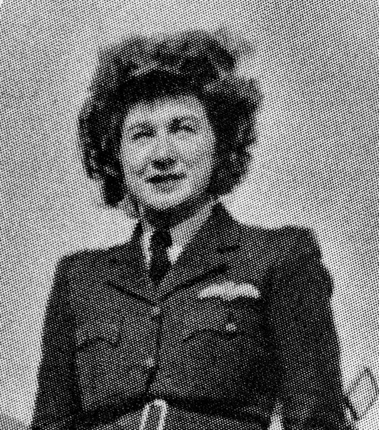
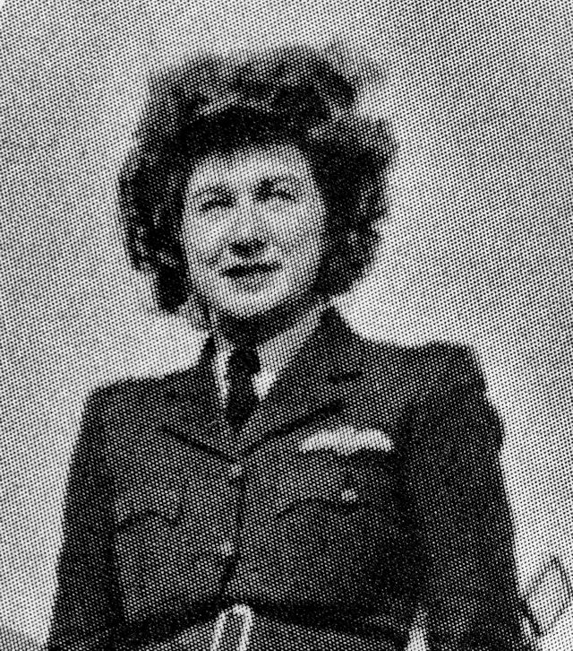

Squadrons met nederlandse piloten:
-
{% assign squadrons = site.data.raf-faa-squadrons-with-dutch-members.raf %}
RAF
{{ squadrons | join: ", " }} -
{% assign squadrons = site.data.raf-faa-squadrons-with-dutch-members.faa %}
FAA
{{ squadrons | join: ", " }}
Vrouwelijke vliegers in de RAF
-
Schuurman, Emma Mathilde
 Shuurman tijdens theorie training in 1942.Shuurman bij het ATA
Shuurman tijdens theorie training in 1942.Shuurman bij het ATAVlieger bij de ATA
-
Veldhuyzen van Zanten, Ida Laura
Wikipedia
 Ida Laura Veldhuyzen van Zanten.
Ida Laura Veldhuyzen van Zanten.Vlieger bij de ATA
- Kruis van Verdienste
- Vliegerkruis
- Verzetsherdenkingskruis
- Defence Medal (Engeland)
Download voor Excel
Open Excel, Navigeer naar "Gegevens->Uit tekst/CSV" en open het gedownloade bestand. Selecteer bij "Oorspronkelijk
bestand", "65001: Unicode (UTF-8)" en klik op "Laden".
Download JSON
Lijst van Nederlandse vliegers bij de RAF en de FAA.
Bron: Defensie
{% assign vliegers=site.data.vliegers %}
| {{ column[0] }} | {% endfor %} {% for row in vliegers %} {% assign i = forloop.index %}
|---|
| {{ cell[1] }} | {% endfor %}